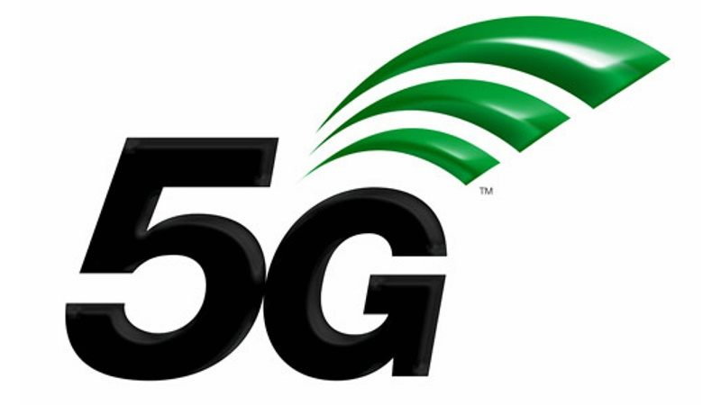

Seminario de Tecnología
Html 5

HTML5 es un lenguaje markup (de hecho, las siglas de HTML significan Hyper Text Markup Language) usado para estructurar y presentar el contenido para la web. Es uno de los aspectos fundamentales para el funcionamiento de los sitios, pero no es el primero. Es de hecho la quinta revisión del estándar que fue creado en 1990.
A fines del año pasado, la W3C la recomendó para transformarse en el estándar a ser usado en el desarrollo de proyectos venideros. Por así decirlo, qué es HTML5 está relacionado también con la entrada en decadencia del viejo estándar HTML4, que se combinaba con otros lenguajes para producir los sitios que podemos ver hoy en día. Con HTML5, tenemos otras posibilidades para explotar usando menos recursos. Con HTML5, también entra en desuso el formato XHTML, dado que ya no sería necesaria su implementación.
En términos de Markup, el HTML5 introduce algunos elementos que hacen que se aggiorne a los tiempos que corren. Así, muchas de las novedades están relacionadas con la forma de construir websites que se tiene en la actualidad. Una de las más importantes novedades está relacionada con la inserción de multimedia en los sitios web, que ahora contarán con etiquetas HTML especiales para poder ser incluidos. Por otro lado, algunos aspectos de diseño también son incluidos en el lenguaje, así como también algunos detalles de navegación. Veremos todo esto en algunas líneas.
El lenguaje HTML funciona a través de marcas de sentido llamadas etiquetas. Las etiquetas son la herramienta fundamental para que los navegadores puedan interpretar el código y permitirnos ver imágenes, texto, párrafo, y estructuras. Los navegadores vendrían a ser como “traductores” de las etiquetas, y con HTML5, se agregan nuevas etiquetas para utilizar que nos ahorran el uso de otros productos que se usaban para complementar y hacer cosas que con el simple HTML no se podían hacer. HTML5 fue creado para hacer que el proceso de escribir el código sea más simple y más lógico, por decirlo de una forma. La sintaxis de HTML5 se destaca, como dijimos, en el ámbito multimedia, pero son bastantes las etiquetas introducidas para generar una mejoría.
Leer Mas
Conceptos de HTML5
Caracteristica de HTML
Etiquetas
Conocer más
Videos Relacionados
Que es HTML5
Conceptos básicos
Elementos
Función
CSS

CSS (siglas en inglés de Cascading Style Sheets), en español "Hojas de estilo en cascada", es un lenguaje de diseño gráfico para definir y crear la presentación de un documento estructurado escrito en un lenguaje de marcado.2 Es muy usado para establecer el diseño visual de los documentos web, e interfaces de usuario escritas en HTML o XHTML; el lenguaje puede ser aplicado a cualquier documento XML, incluyendo XHTML, SVG, XUL, RSS, etcétera. También permite aplicar estilos no visuales, como las hojas de estilo auditivas.
Junto con HTML y JavaScript, CSS es una tecnología usada por muchos sitios web para crear páginas visualmente atractivas, interfaces de usuario para aplicaciones web, y GUIs para muchas aplicaciones móviles (como Firefox OS).
La separación del formato y el contenido hace posible presentar el mismo documento marcado en diferentes estilos para diferentes métodos de renderizado, como en pantalla, en impresión, en voz (mediante un navegador de voz o un lector de pantalla, y dispositivos táctiles basados en el sistema Braille. También se puede mostrar una página web de manera diferente dependiendo del tamaño de la pantalla o tipo de dispositivo. Los lectores pueden especificar una hoja de estilos diferente, como una hoja de estilos CSS guardado en su computadora, para sobreescribir la hoja de estilos del diseñador.
La especificación CSS describe un esquema prioritario para determinar qué reglas de estilo se aplican si más de una regla coincide para un elemento en particular. Estas reglas son aplicadas con un sistema llamado de cascada, de modo que las prioridades son calculadas y asignadas a las reglas, así que los resultados son predecibles.
Leer Mas
Desarrollo Web con CSS
Importancia del CSS
CSS con HTML
Consejos CSS
Videos Relacionados
CSS en HTML5
Dibujos con CSS
Conceptos
CSS en desarrollo web
JAVASCRIPT

El lenguaje fue inventado por Brendan Eich en la empresa Netscape Communications, que es la que fabricó los primeros navegadores de Internet comerciales.Apareció por primera vez en el producto de Netscape llamado Netscape Navigator 2.0.Se utiliza en páginas web HTML, para realizar tareas y operaciones en el marco de la aplicación cliente.
Los autores inicialmente lo llamaron Mocha y más tarde LiveScript pero fue rebautizado como JavaScript en un anuncio conjunto entre Sun Microsystems y Netscape, el 4 de diciembre de 1995.JScript es la implementación de ECMAScript de Microsoft, muy similar al JavaScript de Netscape, pero con ciertas diferencias en el modelo de objetos del navegador que hacen a ambas versiones con frecuencia incompatibles.
Se utiliza principalmente en su forma del lado del cliente (client-side), implementado como parte de un navegador web permitiendo mejoras en la interfaz de usuario y páginas web dinámicas aunque existe una forma de JavaScript del lado del servidor (Server-side JavaScript o SSJS). Su uso en aplicaciones externas a la web, por ejemplo en documentos PDF, aplicaciones de escritorio (mayoritariamente widgets) es también significativo.
Tradicionalmente se venía utilizando en páginas web HTML para realizar operaciones y únicamente en el marco de la aplicación cliente, sin acceso a funciones del servidor. Actualmente es ampliamente utilizado para enviar y recibir información del servidor junto con ayuda de otras tecnologías como AJAX. JavaScript se interpreta en el agente de usuario al mismo tiempo que las sentencias van descargándose junto con el código HTML.
Leer Mas
Que es JAVASCRIPT
Consejos JAVASCRIPT
OPtimizar código JAVASCRIPT
Recomendaciones
Videos Relacionados
Que es JAVASCRIPT
Conceptos de JAVASCRIPT
Consejos
Programación en JAVASCRIPT
PROGRESSIVE WEB APP

Las Progressive Web Apps (PWA) son un tipo de aplicaciones que se podrían definir como: “Página web que se aprovecha de las tecnologías webs a las cuales tiene acceso para proponer una experiencia móvil similar a una aplicación nativa”. Al final, una Progressive Web App, es una nueva generación de aplicaciones que están a medio camino entre una web y una app, ya que tienen lo mejor de los dos mundos. Además, incrementan su funcionalidad en base a las capacidades del dispositivo en el que se ejecutan, de ahí que se denominen con la palabra “progresiva”.
Uno de los elementos más importantes es el manifesto de la aplicación. Es un archivo muy sencillo (formato JSON) que te permite controlar cómo se verá tu aplicación en las áreas donde normalmente los usuarios tienen aplicaciones nativas.
Es importante tener en cuenta que, la posibilidad de usar el portal sin conexión, implica que debemos desarrollar un sistema para que los datos de la navegación offline (páginas vistas etc…), se manden a Google Analytics o cualquier otro programa de medición que estés usando, cuando el usuario se haya conectado de nuevo a la red.
Uno de los beneficios principales de las PWA es su peso: páginas completas pueden tener un peso >1MB, ofreciendo una experiencia veloz para los usuarios. Es uno de los puntos a favor del desarrollo de este tipo de aplicación, especialmente en un mundo mobile-first. Además del uso de los programas clásicos para medir la velocidad de tu PWA, puedes usar Lighthouse, extensión de Chrome desarrollado por Google.
Leer Mas
Conceptos de PWA
pwa en windows 10
Conocer más
Función de pwa
Videos Relacionados
Que es pwa
pwa en el futuro
Saber más
aprender pwa
INTELIGENCIA ALTIFICIAL
La Inteligencia Artificial (IA) es la combinación de algoritmos planteados con el propósito de crear máquinas que presenten las mismas capacidades que el ser humano. Una tecnología que todavía nos resulta lejana y misteriosa, pero que desde hace unos años está presente en nuestro día a día a todas horas.
En realidad, el concepto de inteligencia artificial no es tan reciente como parece. Desde los tiempos de Alan Turing –al que se considera el padre de la misma– y la construcción de su dispositivo Bombe, que permitió descifrar los códigos de la máquina alemana Enigma, han pasado más de setenta años. En un momento dado del film 'The Imitation Game' (Morten Tyldum, 2014), en el que Benedict Cumberbatch interpreta al célebre matemático, un detective le pregunta: '¿Podrán las máquinas algún día pensar como los humanos?'. A lo que él responde: 'La mayoría de la gente piensa que no'.
La idea es que vaya aprendiendo, por así decirlo, tras 'alimentarse con millones de grabaciones'. IBM, por su parte, afina su superordenador Watson, que en 2011 derrotó a los campeones humanos del concurso estadounidense de preguntas y respuestas 'Jeopardy!'. Su intención es mejorar las funciones cognitivas del ingenio y comprobar sus capacidades para realizar diagnósticos médicos, análisis de la personalidad y traducciones en tiempo real. Los ingenieros de Facebook no se quedan atrás y han ideado un algoritmo que permite reconocer un rostro con éxito el 97 % de las veces, aunque haya sido mal captado.
La automatización es el proceso de crear automáticamente un sistema o una función de proceso. La automatización robótica de procesos (RPA), por ejemplo, puede programarse para realizar tareas repetibles de alto volumen normalmente realizadas por seres humanos. La RPA es diferente de la automatización de TI en que se puede adaptar a las circunstancias cambiantes.
Machine Learning

Machine Learning es una disciplina científica del ámbito de la Inteligencia Artificial que crea sistemas que aprenden automáticamente. Aprender en este contexto quiere decir identificar patrones complejos en millones de datos. La máquina que realmente aprende es un algoritmo que revisa los datos y es capaz de predecir comportamientos futuros. Automáticamente, también en este contexto, implica que estos sistemas se mejoran de forma autónoma con el tiempo, sin intervención humana. Veamos cómo funciona.
Deep Learning

Se describe a menudo como un tipo de técnicas de Inteligencia Artificial donde las computadoras aprenden a hacer algo sin ser programadas para ello. Por poner un ejemplo sencillo, se podría programar un ordenador para identificar a un animal como un gato escribiendo un código que indique al programa que elija "gato" cuando se ve una imagen concreta de un gato. Esto funcionaría si el único gato con el que tratase el programa es el de esa imagen, pero no lo haría si el programa tuviera que ver un montón de imágenes de diferentes animales, incluyendo una gran cantidad de gatos, y tuviera que identificar cuáles de ellas representan a un gato.
Red Neuronal
Las redes neuronales (también conocidas como sistemas conexionistas) son un modelo computacional basado en un gran conjunto de unidades neuronales simples (neuronas artificiales) de forma aproximadamente análoga al comportamiento observado en los axones de las neuronas en los cerebros biológicos1. La información de entrada atraviesa la red neuronal (donde se somete a diversas operaciones) produciendo unos valores de salida. Cada neurona está conectada con otras a través de unos enlaces. En estos enlaces el valor de salida de la neurona anterior es multiplicado por un valor de peso. Estos pesos en los enlaces pueden incrementar o inhibir el estado de activación de las neuronas adyacentes. Del mismo modo, a la salida de la neurona, puede existir una función limitadora o umbral, que modifica el valor resultado o impone un límite que se debe sobrepasar antes de propagarse a otra neurona. Esta función se conoce como función de activación.
Leer Mas
Conceptos de IA
Ventajas y Riesgos de IA
El Mundo de IA
Aplicaciones de IA
Videos Relacionados
Que es la INTELIGENCIA ALTIFICIAL
Que es Machine Learning
Que es Deep Learning
Que es Red Neuronal
CRIPTOMONEDAS
Las criptomonedas son monedas virtuales. Pueden ser intercambiadas y operadas como cualquier otra divisa tradicional, pero están fuera del control de los gobiernos e instituciones financieras.Existe un gran número de criptodivisas disponibles, todas con sus propias características y aplicaciones. Las que tienen mayor capitalización de mercado son -al menos por ahora- una minoría, que incluye bitcoin, bitcoin cash, ether, litecoin, ripple y dash.
Las criptomonedas pueden ser consideradas como una alternativa a las divisas tradicionales, pero en realidad fueron concebidas como una solución de pago completamente convencional. En estos momentos, bastantes tiendas aceptan criptomoneda como forma de pago.Aunque es cierto que su validez como método de pago es fundamental para su valor, las criptomonedas habitualmente se parecen más a materias primas como el oro que al mercado de forex.
Minar criptomonedas es el proceso a través del cual las transacciones de criptomoneda se verifican y se ofrecen nuevas unidades.El objetivo de los mineros es recopilar las últimas transacciones en bloques (es decir, conjuntos de transacciones verificadas) y encontrar una solución a un complejo algoritmo. Haciendo esto se obtiene una recompensa: una cantidad fija de criptomoneda. Esta cantidad varía según la criptomoneda en la que se trabaje; la recompensa de bitcoin, por ejemplo, es actualmente de 12,5 bitcoins.
Si se ha decidido invertir en monedas virtuales, o lo que es lo mismo, invertir en criptodivisas, es importante saber que las criptomonedas pueden adquirirse sin que intervenga ningún intermediario y aunque puede invertirse cualquier cantidad, pues no es necesario adquirir criptomonedas enteras, la cantidad mínima que suele recomendarse son 100 $, unos 80 €, según en tipo de cambio dollar USA-euro en cada momento.
Leer Mas
Conceptos de Criptomonedas
Inversion en Criptomonedas
Saber más
Consejos de Criptomonedas
Videos Relacionados
Que son CRIPTOMONEDAS
Como funciona
Consejos
Como invertir en CRIPTOMONEDAS
BLOCKCHAIN

Es una estructura de datos en la que la información contenida se agrupa en conjuntos (bloques) a los que se les añade metainformaciones relativas a otro bloque de la cadena anterior en una línea temporal, de manera que gracias a técnicas criptográficas, la información contenida en un bloque solo puede ser repudiada o editada modificando todos los bloques posteriores. Esta propiedad permite su aplicación en entorno distribuido de manera que la estructura de datos blockchain puede ejercer de base de datos pública no relacional que contenga un histórico irrefutable de información.
Los datos almacenados en la cadena de bloques normalmente suelen ser transacciones (p. ej. financieras) por eso es frecuente llamar a los datos transacciones. Sin embargo, no es necesario que lo sean. Realmente podríamos considerar que lo que se registran son cambios atómicos del estado del sistema. Por ejemplo una cadena de bloques puede ser usada para estampillar documentos y asegurarlos frente a alteraciones.
Entender lo que es esa cadena de bloques no es tan difícil, y dado que cada vez se utiliza más este concepto hemos querido hacer una especie de curso rápido de introducción al blockchain, para explicar qué es, cómo funciona y cuál es esa revolución que plantea la cadena de bloques.
Pongámonos en situación. Lo normal es que si una persona llamada por ejemplo Mariano quisiera enviarle 1.000 euros a otra persona llamada por ejemplo Luis, lo normal es que la operación se realizase a través de un banco. Ese banco actúa como intermediario de esa y otras muchas transacciones, centralizando de forma efectiva el movimiento de capital de un lado a otro.
Leer Mas
Conceptos de blockchain
La tecnología de blockchain
Tecnología del blockchain
Saber más
Videos Relacionados
Que es blockchain
Función
Como usarlo
Saber más
CYBER SECURITY
Según los profesionales en seguridad de ISACA (Information Systems Audit and Control Association) la ciberseguridad se define como una capa de protección para los archivos de información, a partir de ella, se trabaja para evitar todo tipo de amenazas, las cuales ponen en riesgo la información que es procesada, transportada y almacenada en cualquier dispositivo.La ciberseguridad trata de trabajar en robustos sistemas que sean capaces de actuar antes, durante y después, no sirve solo para prevenir, sino también dar confianza a los clientes y al mercado, pudiendo así reducir el riesgo de exposición del usuario y de los sistemas.
Es un hecho que, en esta sociedad que hoy en día es más global, móvil y digital, los riesgos que se relacionan con la seguridad de información se multiplican, es por ello que los expertos en la ciberseguridad se encuentran muy demandados en el mercado laboral, y cada día este número aumenta.Las empresas necesitan de estos profesionales ya que saben que la prevención es la clave para proteger la información y no verse inmiscuido en situaciones de debilidades con secuelas inmensas para dichas empresas. Por tanto, estar formado en ciberseguridad es una muy buena opción para encontrar empleo a día de hoy.
La ciberseguridad es la práctica de defender las computadoras y los servidores, los dispositivos móviles, los sistemas electrónicos, las redes y los datos de ataques maliciosos. También se conoce como seguridad de tecnología de la información o seguridad de la información electrónica. El término es amplio y se aplica a numerosos elementos, desde seguridad informática hasta recuperación ante desastres y educación del usuario final.
El gobierno de Estados Unidos invierte USD 13 000 millones al año en ciberseguridad, pero advierte que los ciberataques siguen evolucionando con gran rapidez. Para contrarrestar la proliferación de código malicioso y ayudar en la detección temprana, el Instituto Nacional de Estándares y Tecnología (NIST) recomienda el monitoreo continuo y en tiempo real de todos los recursos electrónicos.
Leer Mas
Conceptos de CYBER SECURITY
Importancia de CYBER SECURITY
Direccion entre CYBER SECURITY y Informatic security
Saber Más
Videos Relacionados
Que es CYBER SECURITY
Herramientas de CYBER SECURITY
Consejos
Saber más
REALIDAD VIRTUAL

La realidad virtual (RV) es un entorno de escenas u objetos de apariencia real. La acepción más común refiere a un entorno generado mediante tecnología informática, que crea en el usuario la sensación de estar inmerso en él. Dicho entorno es contemplado por el usuario a través de un dispositivo conocido como gafas o casco de realidad virtual. Este puede ir acompañado de otros dispositivos, como guantes o trajes especiales, que permiten una mayor interacción con el entorno así como la percepción de diferentes estímulos que intensifican la sensación de realidad.
La realidad virtual comprende dos componentes principales: el entorno del usuario y el entorno virtual. Mientras el usuario interactúa con el sistema de realidad virtual, los dos entornos se comunican e intercambian información a través de una barrera llamada interfaz. La interfaz puede considerarse como un traductor entre el usuario y el sistema de realidad virtual. Cuando el usuario aplica acciones de entrada (por ejemplo, movimiento, generación de fuerza, voz, etc.), la interfaz traduce estas acciones en señales digitales, que pueden ser procesadas e interpretadas por el sistema. Por otro lado, las reacciones calculadas del sistema también se traducen por la interfaz en cantidades físicas, que el usuario puede percibir mediante el uso de diferentes tecnologías de pantalla y actuador (por ejemplo, imágenes, sonidos, olores, etc.). Finalmente, el usuario interpreta esta información y reacciona al sistema en consecuencia.
En las aplicaciones de realidad virtual, el intercambio de diferentes cantidades físicas entre el usuario y el entorno virtual se produce a través de diferentes canales o modalidades. Tales modalidades pueden ser sonido, visión o tacto. La comunicación con múltiples modalidades se llama interacción multimodal. La interacción multimodal permite que varios tipos de modalidades se intercambien simultáneamente entre el usuario y el entorno virtual. El objetivo de la aplicación de la interacción multimodal es proporcionar una imagen completa y realista de la situación, para proporcionar información redundante, por ejemplo, por razones de seguridad, y para aumentar la calidad de la presencia.
El alto precio de los dispositivos inmersivos ha generalizado el uso de ambientes virtuales fáciles de manipular por medio de dispositivos más sencillos, como es el ejemplo del importante negocio de las videoconsolas o los juegos en los que numerosos usuarios interactúan a través de Internet. Es a través de Internet como nace VRML, que es un estándar para la creación de estos mundos virtuales no inmersivos, que provee un conjunto de primitivas para el modelaje tridimensional y permite dar comportamiento a los objetos y asignar diferentes animaciones que pueden ser activadas por los usuarios.
Leer Mas
Conceptos de RV
RV en el presente y en el futuro
Novedades de RV
Conocer mas de RV
Videos Relacionados
Conceptos
Función
Otros conceptos
Saber más
REALIDAD AUMENTADA
El término lo acuñó en 1992 el científico e investigador Thomas P. Caudell mientras desarrollaba uno de los aviones más famosos del mundo: el Boeing 747. Caudell observó que los operarios encargados del ensamblaje de la nueva aeronave perdían demasiado tiempo interpretando las instrucciones y pensó: ¿Qué pasaría si tuvieran acceso a una pantalla que les guiase durante la instalación? El invento no triunfó, pero en ese preciso momento nacía el concepto de Realidad Aumentada (RA).
Surgía entonces y no en el verano de 2016, como muchos creemos, cuando nos vimos contagiados por la fiebre de Pokémon GO, un videojuego que consistía en buscar y capturar diferentes personajes de la saga japonesa y que, en su momento más álgido, alcanzó la astronómica cifra de 45 millones de usuarios diarios activos.
Pokémon GO popularizó la RA, la acercó al gran público —a todos los públicos—, pero por aquel entonces ya eran muchas las empresas de muy diversos sectores (sanidad, educación, arquitectura, servicios, retail, etc.) que la empezaban a utilizar con el objetivo de crear experiencias de valor para sus clientes.
¿Te imaginas disfrutar de un cóctel aderezado con un toque de RA? Recientemente, se ha inaugurado en Washington el primer museo-bar con esta tecnología en todo EE. UU. En tan solo seis meses, por su puerta han cruzado más de 100.000 visitantes. Y es que en 2018 las aplicaciones de RA son tan innumerables como sorprendentes: desde permitirnos saber cuál es el estilo arquitectónico del edificio que tenemos delante, a darle vida a un cuadro de Monet o, en un plano diferente, poder visualizar el informe de un paciente en plena operación.
Leer Mas
Beneficios de la REALIDAD AUMENTADA
Conceptos de REALIDAD AUMENTADA
Función de la REALIDAD AUMENTADA
direfencia con la REALIDAD VIRTUAL
Videos Relacionados
Que es REALIDAD AUMENTADA
diferencia entre RV y RA
Saber más
Ejemplos
REALIDAD MIXTA
La realidad mixta (RM), también llamada a veces realidad híbrida, es la combinación de realidad virtual y realidad aumentada. Esta combinación permite crear nuevos espacios en los que interactúan tanto objetos y/o personas reales como virtuales. Es decir, se puede considerar como una mezcla entre la realidad, realidad aumentada, virtualidad aumentada y realidad virtual.
El término realidad mixta no debe confundirse con el de realidad aumentada o RA. La realidad aumentada genera los estímulos a tiempo real para la interacción del usuario, los cuales se superponen sobre el entorno físico de este, mientras que la realidad mixta no sólo permite la interacción del usuario con el entorno virtual sino que también permite que objetos físicos del entorno inmediato del usuario sirvan como elementos de interacción con el entorno virtual.
En 1994 Paul Milgram y Fumio Kishino definieron el concepto de realidad mixta como cualquier espacio entre los extremos del continuo de la virtualidad. Este continuo de la virtualidad se extiende desde el mundo completamente real hasta el entorno completamente virtual, encontrándose entre medio de estos la realidad aumentada y realidad virtual.
La realidad mixta permite que una fuerza de trabajo global de equipos remotos trabaje conjuntamente y aborde los retos empresariales de una organización. No importa dónde se encuentre físicamente, un empleado puede ingresar a un entorno virtual colaborativo y dinámico. Las barreras de idioma se volverán irrelevantes ya que las aplicaciones de AR pueden traducir con exactitud en tiempo real. Esto representa una mano de obra más flexible. Si bien, muchos compañías siguen utilizando modelos inflexibles de tiempo de trabajo fijo y ubicación, hay evidencia de que los empleados son más productivos si tienen mayor autonomía sobre dónde, cuándo y cómo trabajan. Los empleados también se benefician de la autonomía en cómo trabajan porque cada uno procesa la información diferentemente. El modelo VAK clásico para los estilos de aprendizaje diferencia a los alumnos visuales, auditivos y cenestésicos.
Leer Mas
Conceptos de la REALIDAD MIXTA
Futuro de la REALIDAD MIXTA
Ejemplo de la REALIDAD MIXTA
Conocer más
Videos Relacionados
Que es RM
Desarrollo de RM
Saber más
Otros conceptos
INTERNET DE LAS COSAS
Es un término del que escuchamos hablar constantemente. Internet de las cosas, Internet of Things o IoT por sus siglas en ingles, es un concepto un poco abstracto pero que ha estado ganando bastante popularidad en los últimos meses. La idea que intenta representar queda bastante bien ilustrada por su nombre, cosas cotidianas que se conectan al Internet, pero en realidad se trata de mucho más que eso.
Para entender de qué va el Internet de las cosas debemos también comprender que sus fundamentos no son en lo absoluto nuevos. Desde hace unos 30 años que se viene trabajando con la idea de hacer un poco más interactivos todos los objetos de uso cotidiano. Ideas como el hogar inteligente, también conocido como la casa del mañana, han evolucionado antes de que nos demos cuenta en el hogar conectado para entrar al Internet de las cosas.
El Internet de las cosas potencia objetos que antiguamente se conectaban mediante circuito cerrado, como comunicadores, cámaras, sensores, y demás, y les permite comunicarse globalmente mediante el uso de la red de redes.
Si tuviéramos que dar una definición del Internet de las cosas probablemente lo mejor sería decir que se trata de una red que interconecta objetos físicos valiéndose del Internet. Los mentados objetos se valen de sistemas embebidos, o lo que es lo mismo, hardware especializado que le permite no solo la conectividad al Internet, sino que además programa eventos específicos en función de las tareas que le sean dictadas remotamente.
Leer Mas
Conceptos del INTERNET DE LAS COSAS
Función del INTERNET DE LAS COSAS
Saber más
Conocer más
Videos Relacionados
Que es INTERNET DE LAS COSAS
Función
Ejemplos
documental
MECATRONICA
Es una disciplina que sirve para diseñar robots y a los productos que involucren a sistema de control para el diseño de productos o procesos inteligentes, lo cual busca crear maquinaria más compleja para facilitar las actividades del ser humano a través de procesos electrónicos en la industria mecánica, principalmente. Esta disciplina une la ingeniería mecánica, ingeniería electrónica, ingeniería de control e ingeniería informática. Debido a que combina varias ingenierías en una sola, su punto fuerte es la versatilidad.
Un consenso común es describir a la mecatrónica como una disciplina integradora de las áreas de mecánica, electrónica e sistemas cuyo objetivo es proporcionar mejores productos, procesos y sistemas industriales. La mecatrónica no es, por tanto, una nueva rama de la ingeniería, sino un concepto recientemente desarrollado que enfatiza la necesidad de integración y de una interacción intensiva entre diferentes áreas de la ingeniería.
Con base en lo anterior, se puede hacer referencia a la definición propuesta por J. A. Rietdijk: "mecatrónica es la combinación sinérgica de la ingeniería mecánica de precisión, de la electrónica, del control automático y de los sistemas para el diseño de productos y procesos", la cual busca crear maquinaria más compleja para facilitar las actividades del ser humano a través de procesos electrónicos en la industria mecánica principalmente. Existen, claro está, otras versiones de esta definición, pero ésta claramente enfatiza que la mecatrónica está dirigida a las aplicaciones y al diseño.
La mecatrónica nace para suplir tres urgentes necesidades latentes; la primera, encaminada a automatizar la maquinaría y así lograr procesos productivos ágiles y confiables; la segunda crear productos inteligentes, que respondan a las necesidades del mundo moderno; y la tercera, por cierto muy importante, armonizar entre los componentes mecánicos y electrónicos de las máquinas, ya que en muchas ocasiones, era casi imposible lograr que tanto mecánica como electrónica manejaran los mismos términos y procesos para hacer o reparar equipos.
Leer Mas
Que es MECATRONICA
aplicaciones de la MECATRONICA
Consejos
Saber más
Videos Relacionados
Introduccion a la MECATRONICA
En la Ingenieria
Consejos
Saber más
3D PRINTING

Las impresoras 3D son por lo general más rápidas, más baratas y más fáciles de usar que otras tecnologías de fabricación por adición, aunque como cualquier proceso industrial, estarán sometidas a un compromiso entre su precio de adquisición y la tolerancia en las medidas de los objetos producidos. Las impresoras 3D ofrecen a los desarrolladores del producto la capacidad para imprimir partes y montajes hechos de diferentes materiales con diferentes propiedades físicas y mecánicas, a menudo con un simple proceso de ensamble. Las tecnologías avanzadas de impresión 3D pueden incluso ofrecer modelos que pueden servir como prototipos de producto.
En los años 1976 se desarrollaron equipos y materiales de fabricación de aditivos tempranos. En 1981, Hideo Kodama, del Instituto Municipal de Investigaciones Industriales de Nagoya, inventó dos métodos de fabricación AM de un modelo de plástico tridimensional con un polímero fotoendurecible, en el que el área de exposición a los rayos UV era controlada por un patrón de máscara o transmisor de fibra de barrido.
El aditivo de fabricación se lleva a planos virtuales de diseño asistido por ordenador(CAD) o el software de modelado y animación, se encuentran en secciones digitales para la máquina para utilizar sucesivamente como una guía para la impresión. Dependiendo de la máquina que se utiliza, el material o un material de unión se deposita sobre el lecho de construcción o de la plataforma hasta que el material de estratificación / aglutinante es completa y el modelo 3D final ha sido "impreso". Una interfaz estándar de datos entre el software CAD y de las máquinas es el formato de archivo STL (STL (siglas provenientes del inglés "'STereo Lithography'"') es un formato de archivo informático de diseño asistido por computadora (CAD) que define geometría de objetos 3D, excluyendo información como color, texturas o propiedades físicas que sí incluyen otros formatos CAD). Un archivo STL se aproxima a la forma de una pieza o un ensamblaje utilizando facetas triangulares. Facetas más pequeñas producen una superficie de mayor calidad. CAPA es un formato de archivo de entrada analizador generado, y VRML (WRL) o archivos a menudo se utilizan como entrada para las tecnologías de impresión 3D que son capaces de imprimir a todo color.
Un método de impresión 3D consiste en el sistema de impresión por inyección. La impresora crea el modelo de capa en capa esparciendo una capa de la sección de la pieza. El proceso es repetido hasta que todas las capas han sido impresas. Esta tecnología es la única que permite la impresión de prototipos a todo color, permitiendo además, extraplanos o salientes.
Leer Mas
Conceptos de 3D PRINTING
Función de 3D PRINTING
Otros conceptos
Saber más
Videos Relacionados
Conceptos
Función
Como trabajan
Saber más
5G

Las redes de telecomunicaciones de la próxima generación (5G) llegarán al mercado hacia 2020. Más allá de las mejoras en la velocidad, se espera que la tecnología 5G desate todo un ecosistema del Internet de las Cosas masivo en el que las redes pueden satisfacer las necesidades de comunicación de miles de millones de dispositivos conectados, con un equilibrio justo entre velocidad, latencia y costo. La guía de preguntas que se encuentra a continuación brindará una buena introducción a la tecnología 5G: en qué difiere de la 4G LTE actual, cuáles serán los nuevos casos de uso del Internet de las Cosas y cómo se beneficiarán los operadores de redes móviles con este cambio.
La red inalámbrica de la próxima (5ta) generación abordará la evolución más allá del internet móvil, y alcanzará al Internet de las Cosas masivo hacia 2020. La evolución más notable en comparación con las redes 4G y 4.5G (LTE avanzado) actuales es que, aparte del aumento en la velocidad de los datos, los nuevos casos de uso del Internet de las Cosas y de la comunicación requerirán nuevos tipos de desempeño mejorado; como la “latencia baja”, que brinda una interacción en tiempo real a los servicios que utilizan la nube, lo que resulta clave, por ejemplo, para los vehículos autónomos. Además, el bajo consumo de energía permitirá que los objetos conectados funcionen durante meses o años sin la necesidad de la intervención humana.
A diferencia de los servicios actuales del Internet de las Cosas que sacrifican rendimiento para sacar el máximo provecho a las tecnologías inalámbricas existentes (3G, 4G, WiFi, Bluetooth, Zigbee, etc.), las redes 5G estarán diseñadas para alcanzar el nivel de rendimiento que necesita el Internet de las Cosas masivo. Esto hará posible que se perciba un mundo completamente ubicuo y conectado.
La siguiente generación de redes de telecominicaciones (5G) saldrá al mercado en 2020. Más allá de mejorar la velocidad, se espera que las redes 5G liberen un ecosistema masivo de IoT en el que las redes puedan cubrir las necesidades de comunicación de miles de millones de dispositivos conectados, con la combinación adecuada entre velocidad, latencia y costo. El siguiente documento de preguntas y respuestas le proporcionará una interesante introducción a la tecnología 5G: cómo difiere de la tecnología 4G LTE actual, cuáles son los nuevos casos de uso para IoT y de qué manera los operadores de redes móviles se pueden beneficiar.
Leer Mas
Que es 5G
Otros conceptos
Novedades
Saber más
Videos Relacionados
Que es 5G
Consejos
Conocer más
Saber más
RESUMEN
HTML es esencial en la elaboracion de paginas web, no es indispensable, ya que se pueden hacer paginas web sin esta herramienta, pero al no usarla se harian paginas web muy simples y no atrayantes ante los ojos del usuario, no tendira ningun sentido mirarlas y serian muy aburridas, para un desarrollador de sitios web es indispensable necesario y obligatorio saber usar el lenguaje HTML ya que debe hacer paginas web entretenidas e interesantes, dinamicas, para atraer al usuario, no puede ser un desarrollador de paginas web sin saber esto.
CSS es un lenguaje (no un lenguaje de programación) utilizado para especificar el aspecto de una página web para diferentes dispositivos. Esto entra en contraste con HTML que es un lenguaje que define la estructura de un documento para su distribución por la web. El HTML le dice al navegador como se estructura el documento mientras que el CSS le dice como debe renderizarlo.
Javascript es un lenguaje de programación script con amplio soporte para navegadores y herramientas de desarrollo que permite la creación de contenidos dinámicos en una página web.
Las Progressive Web Apps son la herramienta ideal para mejorar cualquier estrategia de marketing, ofreciéndole a los usuario una experiencia móvil sumamente perfecta y también aumentando notoriamente los ingresos de cualquier tipo de comercio electrónico.
Una vez que la Inteligencia Artificial tenga una inteligencia igual o superior a la del hombre, en ese momento surgirá un cambio político y social en todo el mundo, en el que la inteligencia artificial tiene todas las de ganar si se da cuenta que no necesita a los humanos para dominar el universo.
En el futuro, la inteligencia artificial podría fácilmente hacerse con todas las colonias humanas fuera de la tierra, y la raza humana nunca podrá luchar en el espacio vacío en igualdad de condiciones.
Parece evidente que si la cadena de bloques como concepto sobrevive a la enorme expectación que está causando, podría introducir un nivel de democracia y objetividad en el mundo digital hasta ahora inaudito e inalcanzable en el “mundo físico”.
La promesa que nos hace lleva implícito un futuro en el que nadie tiene poder absoluto en la red y nadie puede mentir sobre acontecimientos pasados o presentes.
La Ciberseguridad es una práctica en continua evolución, ya que cada día aparecen nuevos ataques, retos, e incluso requerimientos legales. Es imprescindible contar con un partner potente en ciberseguridad, que esté bien rodeado, enterado, y que te apoye y de soporte en cada una de las nuevos ‘champiñones’ que te surjan en el día a día.
La Realidad Virtual se refiere al uso de la computadora y otros elementos coordinados por ella, para la simulación dinámica y tridimensional con alto contenido gráfico, acústico y táctil. En esta simulación el usuario ingresa a mundos aparentemente reales, resultando inmerso en ambientes de origen artificial.
La Realidad Aumentada en la actualidad es una herramienta que combina la realidad con lo virtual dándonos la cual nos permite combinar dichas realidades en una sola empleando herramientas que faciliten el desempeño de estos patrones.
Estas tecnologías están ganando popularidad y conviene distinguir sus diferentes usos y aplicaciones. En concreto, la realidad aumentada y mixta comparten muchas similitudes, pero la Realidad Mixta integra todos los elementos con más precisión y ofrece mayor interacción con el usuario.
Alrededor del 2008 cruzamos la barrera en donde hay más dispositivos que humanos conectados a Internet. Estamos progresando rápidamente al “Internet de las cosas” y nos llevará al menos una década alcanzar el auge. La visión unifica tecnologías, filosofías de diseño, expectativas sociales y regulaciones gubernamentales. Esto resultará en nuevos modelos de negocio y un nuevo ecosistema digital.
También podemos decir que la mecatronica aparece en en muchas actividades del ser humano, ya que es una ingeniería que se encarga principalmente en desarrollar nuevas innovaciones o avances tecnológicos todo esto para facilitar las tareas o actividades de un ser humano.
En general, se acepta que la impresión 3D será una fuerza revolucionaria en la fabricación, ya sea positiva o negativa. A pesar de las preocupaciones sobre la falsificación, muchas empresas ya están utilizando la tecnología para producir componentes intrincados, por ejemplo, en la fabricación de automóviles y aeroespaciales.
Mientras algunos todavía sueñan con contar con cobertura 4G algún día, la industria de las telecomunicaciones ya está en pleno desarrollo del 5G. Tiempo llevamos hablando de la quinta generación de redes móviles, de aplicaciones en distintos sectores, sobre todo en automoción, y de la soterrada pelea que se libra a día de hoy por intentar imponerse en un estándar que no se definirá hasta la segunda mitad de 2018.